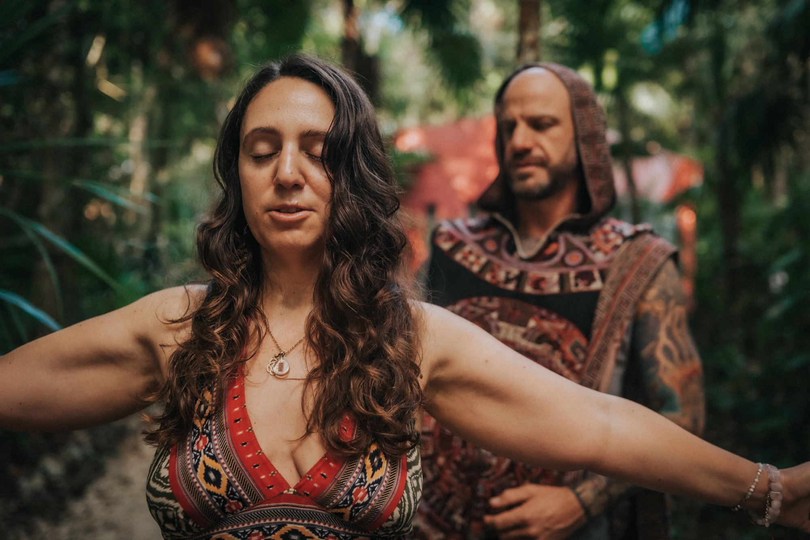

The Reclamation Retreat
Dramatic change in a short, well-held window. For when you want to land the work soon and fully, in a private villa in Tulum with a small group and Bufo (5-MeO-DMT) at its heart.
See the Reclamation Retreat →
Ibogaine Integration
Ibogaine can interrupt the pattern and show you the road. Bufo (5-MeO-DMT) can help you walk it, landing the insight, completing the opening, and bringing it home.
After the Reset
Ibogaine is a profound interrupter. It can break a pattern that would not stop on its own and lay a whole life out in front of you in a single long night. But seeing the road is not the same as walking it. In the weeks after, many people hit a gray, flat stretch, clear of the old pattern but unsure where to go from here. That in-between is where the change is either kept or quietly lost.
 The days after
The days after
What Ibogaine Begins
For many people Ibogaine is the reset nothing else could give. It can loosen addiction's grip and open a clear, honest view of what led there.
It can also leave you in a strange gray period, the addiction or the old story stripped away, but a quiet emptiness in its place and no clear sense of where to go next. That isn't a failure of the medicine. It's the moment the real work starts, and the moment most people are left on their own to make sense of it.
 Medicine of the Gods
Medicine of the Gods
Where Bufo Comes In
Where Ibogaine is long and detailed, Bufo (5-MeO-DMT) is short and total. In a few minutes it can dissolve the noise and return you to a felt sense of unity, the place from which everything you learned starts to settle into place.
Sat with intention after Ibogaine, a Bufo ceremony can lift you out of that gray place and give you a real starting point, a felt reason to rebuild, and the hope to want a future again. It isn't a fix or a treatment. It's a way to come home to yourself and begin.
Learn more about Bufo →Two Ways We Hold This
However you come to it, every path begins with a health screening, and you're held one to one the whole way through.
Dramatic change in a short, well-held window. For when you want to land the work soon and fully, in a private villa in Tulum with a small group and Bufo (5-MeO-DMT) at its heart.
See the Reclamation Retreat →Deeper, slower integration with support before and after. Preparation online, one week together in person for the medicine, then weeks of integration so the change actually holds.
See the Liberation Program →Begin
If you've sat with Ibogaine and know there's more to integrate, reach out. We'll help you find the path that fits. Every journey begins with a simple health screening, and your safety and readiness are honored every step of the way.